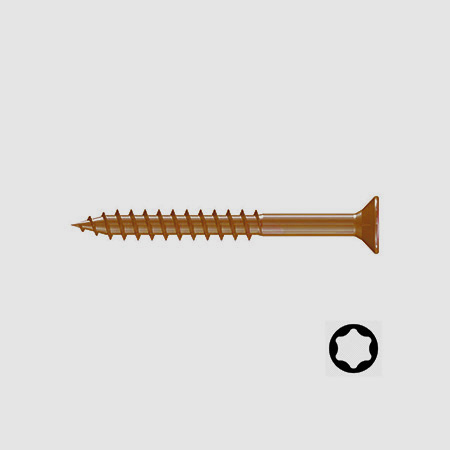

Kies op toepassing
Houtsoort, vocht en de omgeving bepalen welke schroef past. Vraag advies bij hardhout of gebruik bij zout water.

Vlonderschroeven
Een rustige afwerking voor je houten vlonder. De thermische antiekcoating geeft de schroef een donkere kleur, zodat de kop minder opvalt in het hout. Met deeldraad voor het aantrekken van de verbinding.
Prijzen en beschikbaarheid worden geladen.
Houtsoort, vocht en de omgeving bepalen welke schroef past. Vraag advies bij hardhout of gebruik bij zout water.
Gebruik een passende bit en volg de verwerkingsinstructies van de fabrikant. Voorboren kan nodig zijn.
Vertel ons welke planken en onderconstructie je gebruikt. Dan denken we met je mee.
Neem contact op